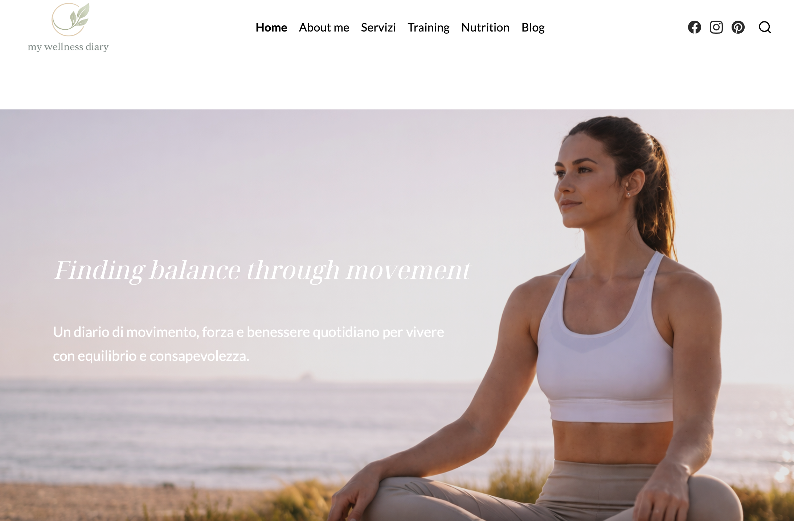

WordPress · Case study
MyWellness Diary
Un blog dedicato al fitness e al benessere, progettato per raccogliere contenuti informativi in uno spazio semplice, ordinato e accessibile.

01 · Il progetto
Contesto
MyWellness Diary è un blog dedicato al fitness, all’alimentazione e al benessere. Il progetto è stato sviluppato attraverso WordPress e pubblicato sulla piattaforma Altervista.
02 · L’obiettivo
Organizzare i contenuti in modo intuitivo
L’obiettivo era creare un sito facilmente navigabile, in cui gli utenti potessero trovare rapidamente articoli e contenuti suddivisi per argomento.
03 · Il mio lavoro
Attività svolte
- Scelta e personalizzazione del tema WordPress.
- Organizzazione delle pagine e delle categorie.
- Creazione e gestione dei contenuti.
- Personalizzazione dell’aspetto grafico.
- Gestione della navigazione del sito.
04 · Risultato
Un blog completo e realmente online
Il risultato è un sito funzionante, accessibile online e aggiornabile attraverso il pannello di amministrazione di WordPress.